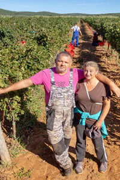

Naša priča
Rovinjsko vino, od ribara do gospode
Još su stari Rimljani prepoznali kvalitetu crvene zapadnoistarske zemlje, obilje sunca i idealnu klimu za vinovu lozu.
Uspješna priča vina Vivoda počinje 1952. godine i traje bez prekida do danas. Vivodina vina pili su svi Rovinježi, od ribara i težaka do gospode. Dobar glas daleko se čuje, pa se danas za naša vina zna i mnogo dalje od Rovinja, Istre i Hrvatske.
S novim tisućljećem Davor i Suzana pospješili su i modernizirali proizvodnju, pazeći da obiteljska tradicija i ekološki uzgoj ostanu na prvome mjestu. Vina dozrijevaju u inox bačvama, a najbolji primjerci malvazije i terana u barrique bačvama, gdje dobivaju intenzivniju boju i jače arome. Takva vina flaširamo posebno.